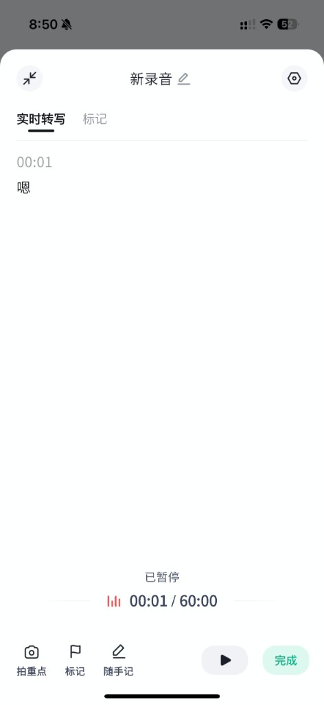
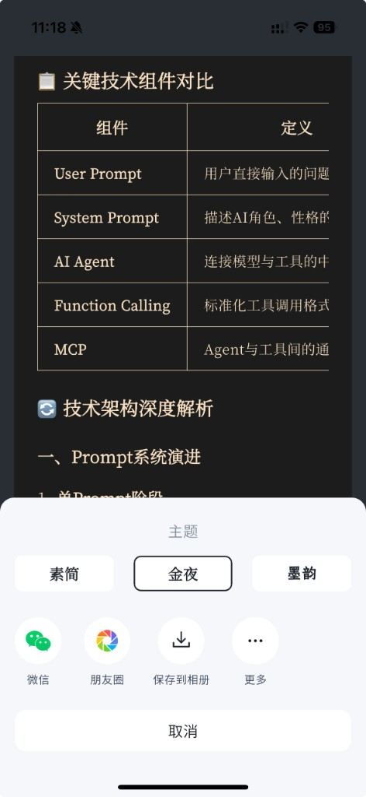
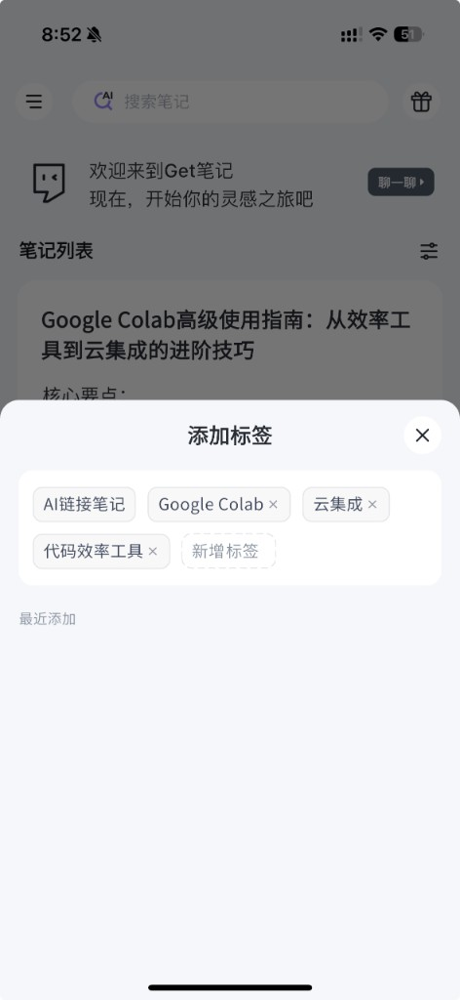

产品改进提案 · 体验优化 · 策略重构
基于真实使用场景的体验问题发现与改进建议，兼顾免费用户留存与付费转化的策略重构。
在进入用户分析前，先建立对产品的基本认知框架。
| 产品 | 核心定位 |
|---|---|
| Notion | 结构化知识管理，重组织，轻采集 |
| Flomo | 碎片化思维记录，极简，无结构 |
| 印象笔记 | 全平台剪藏 + 存档，重存储 |
| Get 笔记 | AI 驱动的内容采集 + 自动整理，重效率 |
信息收集
语音 / 链接 / 拍照AI 整理
自动摘要 / 提取要点知识内化
标签分类 / 回顾知识复用
从输入到输出采用免费 + 付费会员模式（¥199/年），此外还有硬件录音笔用户——续航强、无需保持手机开启，适合长会议场景。免费用户可使用核心 AI 功能，付费差异化主要体现在知识库容量与录音时长。本次分析将重点审视这一差异化策略是否合理——详见 03 节。
综合多源数据，识别核心用户群，有理由地选择最有分析价值的切入视角。
研究方法
本分析综合三类来源：① 本人作为目标用户群的深度使用体验；② 爬虫抓取的 App Store 评论区高频反馈；③ 小红书用户讨论及真实使用分享。用户画像与问题发现均经过多源印证，而非单一主观判断。
| 用户类型 | 核心场景 | 典型诉求 |
|---|---|---|
| 上班族 | 会议录音 + 纪要总结 | 多人识别准、转写快、省去手动整理 |
| 学生党 | 课堂录音 + 拍照记笔记 | 快速整理重点、多端同步 |
| 自由职业者 / 创业者 | 多平台内容 AI 总结 | 高效提炼、节省梳理时间 |
本次分析聚焦「免费用户」，原因如下：
免费用户是增长漏斗的顶端，体量最大，直接决定转化基本盘。App Store 评论中多次出现「免费功能够用」「会推荐给身边人」，说明服务好免费用户才有口碑拉新的基础。
免费用户反映的痛点，本质是产品的基础体验。这些是「地基」，地基不牢，再高阶的功能也留不住人。
免费用户容忍度低，稍有不满即流失，是留存提升空间最大的人群。
以下是我作为学生党 / 免费用户的典型使用路径。值得注意的是：我并没有把 Get 笔记当作知识管理的终点，而是当作「收藏 + AI 总结」的中转站，最终知识沉淀在 Notion。这一路径在小红书用户反馈中高频出现，并非个例。
刷小红书 / B站 / 公众号
发现好内容发给 Get 笔记 AI 总结
快速提取要点电脑端查看总结
根据摘要整理整合到 Notion
最终知识沉淀基于多源体验与用户反馈，梳理出 13 项问题，综合优先级后聚焦 4 个可落地改进展开分析。
本次体验共梳理出 13 项问题，涵盖三个维度：基础阅读与编辑体验、知识库组织与管理能力、多端与外设生态支持。
综合影响用户范围与产品侧修复成本两个维度进行优先级评估，本提案聚焦修复成本可控、影响范围广的 4 个问题重点展开。深色模式、原生 Mac 端等高呼声需求因开发成本大、周期长，建议列入下一阶段 Roadmap，不在本次提案范围内。
影响范围 × 修复成本 四象限
影响大 · 成本低
影响大 · 成本高
影响小 · 成本低
影响小 · 成本高
现状 · 问题

录音进入「已暂停」状态后，底部仅有「播放▶」和绿色「完成」按钮，没有「取消」或「放弃」入口。用户若想放弃当前录音，只能强制完成或直接退出页面，存在误操作风险。值得注意的是，「语音速记」功能已有取消按钮，说明产品团队具备该交互意识，但未在所有录音类型中保持一致。
改进建议
决策说明
此改动不涉及录音核心逻辑，仅补全交互闭环，属于低风险修复。唯一需注意的是二次确认弹窗的文案设计，需足够清晰以防用户误触「取消」丢失有效录音内容。参考系统级录音 App 的交互规范即可落地。
现状 · 问题

笔记中包含表格时，生成分享图片的「定义」列内容被右侧裁切，文字显示不全（如「描述AI角色、性格的…」被截断）。表格无法自适应图片宽度，导致分享出去的内容信息不完整，影响传播质量。
改进建议
决策说明
三种方案优先级依次为：自适应列宽（改动最小，优先实施）→ 横版长图（适合列数多的表格，作为降级方案）→ 表格转列表（作为用户可选项迭代上线，避免一次改动过大）。分步落地可降低发版风险，同时验证用户对不同方案的接受度。
现状 · 问题

用户可以给笔记添加标签（如「AI链接笔记」「Google Colab」），但笔记列表不支持按标签筛选。标签仅作为装饰性元数据存在，无法发挥分类与检索价值。
同时，免费用户知识库容量有限，缺乏基础分类管理工具，导致笔记越积越乱，用户自然放弃将 Get 笔记作为知识管理终点，转而使用 Notion 等工具。小红书上多条用户笔记印证了这一路径，「用 Get 总结、用 Notion 整理」已成为部分用户的固定工作流，说明该问题正在系统性地阻断付费转化路径。
改进建议
决策说明 · 核心 Trade-off
常见顾虑：开放免费用户分类能力，会不会削弱付费吸引力？
这个顾虑逻辑上存在问题。用户不会因为「标签被限制」而付费——他们只会因为笔记太乱而放弃深度使用，连触达付费门槛的机会都没有。开放标签筛选，本质是扩大「有付费潜力」的用户基数，而非让付费失去意义。
付费价值的差异化应转移到真正的 AI 智能功能，而非依赖限制基础分类体验来制造压力。具体方向见第 03 节付费策略重构。
免费层做「够用」，付费层做「真正的智能价值」，以内容市场化创造新增长点。
目前会员核心差异是知识库容量更大、录音时长更长。这是一种以限制免费用户体验换取付费转化的策略。
付费转化的前提是用户认为产品值得深度依赖。当免费用户因为笔记太乱而放弃深度使用，他们不会升级付费——他们会离开。Flomo 的实践印证了这一逻辑：开放无限标签给免费用户，反而提升了整体留存与付费转化率，因为用户真正把它当成了知识管理的家。
开放免费用户的基础分类能力（标签筛选 + 文件夹），同时将付费价值升级到真正的 AI 智能功能：
受益于用户积累高质量知识库后，引入知识广场功能：用户可将自己的知识库设为付费访问，买断制定价，平台收取佣金。
创作者用户
整理高质量知识库知识广场
上架 · 买断定价消费者用户
一次性购买飞轮效应：
免费分类工具开放 → 用户有动力在 Get 笔记深度沉淀知识
高质量知识库产生 → 优质创作者愿意在知识广场变现
知识广场内容丰富 → 吸引更多用户使用 → 知识库用量增加 → 自然触达免费限额 → 转化付费会员
主要风险与冷启动应对
知识广场面临典型的冷启动问题：没有优质内容，买家不来；没有买家，创作者不上架。
建议分两步走：第一步，邀请已有高质量知识库的种子用户内测，平台给予免费会员或流量扶持作为激励，先积累 50–100 个高质量知识库；第二步，开放公测，以「知识广场」作为独立的内容发现入口，形成新的拉新渠道。
参照案例：Notion 模板市场采用类似逻辑，从官方模板起步，逐步开放社区创作，目前已成为重要的用户增长来源，验证了「内容市场化」路径的可行性。
以下为每项改进方案对应的核心指标定义与验证思路。具体目标值需结合产品现有数据基线制定，此处给出指标框架与验证方向。
第一层 · 免费用户留存与使用深度
第二层 · 付费转化前置信号
注：以上指标框架基于产品改动的预期逻辑推导，A/B test 方案需结合实际日活规模评估样本量是否足够。若日活较低，Pre / Post 对比是更可行的替代验证方式。